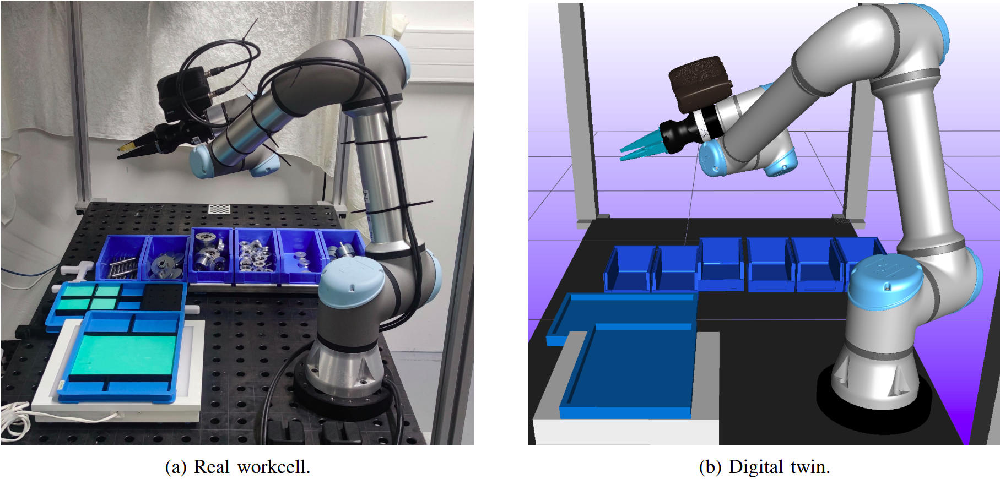

Project Overview
The SDU I4.0 Bin Picking Workcell is a research project focused on developing a flexible and robust bin picking workcell that can handle new objects.
The work was inspired by the SDU Robotics participation in the 2018 World Robot Summit (WRS) Assembly Challenge, where the team achieved 1st place. However, the 2nd day task, kitting object placed in bin, was the most difficult task, with the least amount of points scored. The workcell was created to solve this task, and after this, it has been used for various research projects, resulting in several publications. Methods with a 🤖 used the bin picking workcell.

Publications funded by the project
🤖 Object Pose Distribution Estimation for Determining Revolution and Reflection Uncertainty in Point Clouds
A method for estimating SO(2) object pose distributions in point clouds, a simple bin picking application is shown
🤖 Towards High Precision: An Adaptive Self-Supervised Learning Framework for Force-Based Verification
A data engine for automatically learning insertion success classification using force data
📄 ArrowPose: Segmentation, Detection, and 5 DoF Pose Estimation Network for Colorless Point Clouds
A method for segmentation, detection, and 5 DoF pose estimation in colorless point clouds
🤖 Good Grasps Only: A data engine for self-supervised fine-tuning of pose estimation using grasp poses for verification
A data engine for self-supervised fine-tuning of pose estimation using grasp poses for verification
🤖 KeyMatchNet: Zero-Shot Pose Estimation in 3D Point Clouds by Generalized Keypoint Matching
Development of a method for zero-shot pose estimation in 3D point clouds using generalized keypoint matching
🤖 Off-the-shelf bin picking workcell with visual pose estimation: A case study on the world robot summit 2018 kitting task
Paper demonstrating the ability of the workcell to perform the kitting task
📄 In-Hand Pose Estimation and Pin Inspection for Insertion of Through-Hole Components
Development of a method for robust in-hand pose estimation utilizing the constraints of the grasp
📄 ParaPose: Parameter and Domain Randomization Optimization for Pose Estimation using Synthetic Data
Development of a automatic method for parameter optimization in deep learning models for pose estimation using synthetic data
Funding
This work is supported by the SDU I4.0 lab. Papers have also been partly funded by other sources, which are mentioned in the individual papers.